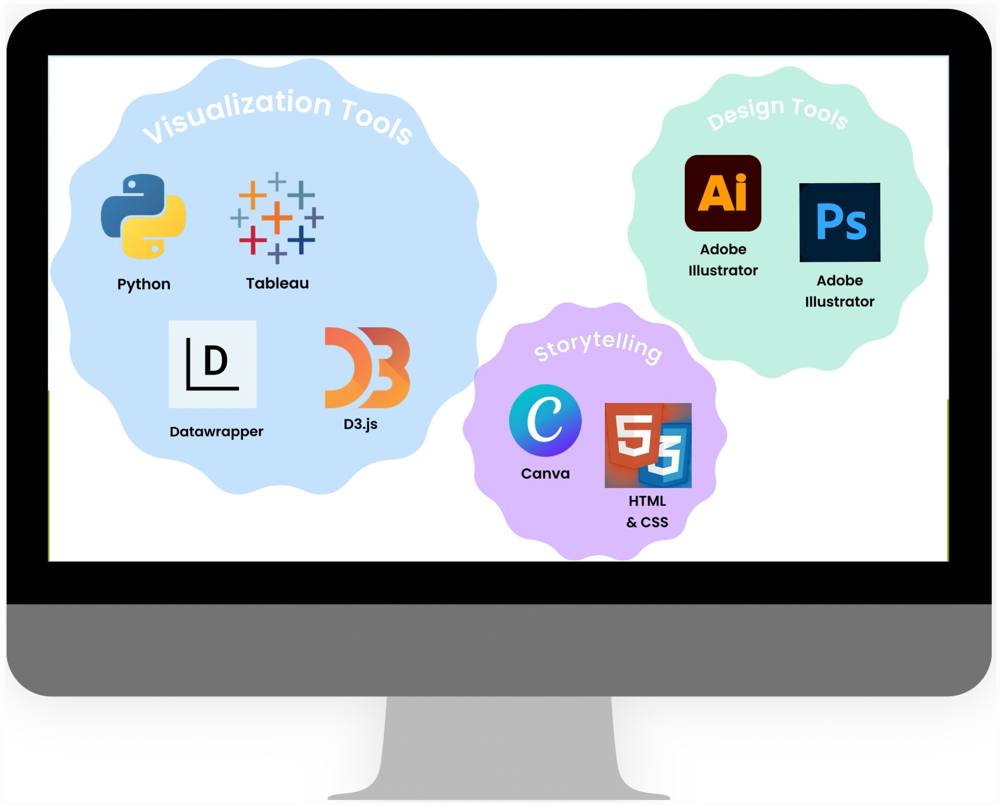

Studies
Postgraduate in Science Communication
International University of Valencia
▼ read more
In progress · Part-time online while working full time
PhD in Atmospheric Physics
University of Santiago de Compostela
▼ read more
Grade: Merit · European Doctorate Mention
Thesis: Precipitation Recycling and the Importance of the Land-Atmosphere Interactions over the European Continent
MSc in Meteorology
Universitat de Barcelona
▼ read more
Relevant subjects: Dynamic Meteorology · Physics of the Atmosphere · Climate and Climate Change · Atmospheric Pollution · Hydrometeorology · Meteorological Modelling · Forecasting
Master's thesis: Effect of lateral boundary conditions in the WRF limited-area model
BSc in Physics
University of Santiago de Compostela
▼ read more
Degree thesis (with honours): Precipitation recycling in Europe. Moisture tracers method for computation of recycling rate
Positions
Climate Scientist
Tragsatec – AEMET · 2024–Present
▼ read more
Working at the interface between climate science and user-oriented services, translating seasonal prediction outputs into accessible information for decision-making contexts such as agriculture and water management.
- Developed interactive web dashboards and graphics to communicate seasonal weather prediction to non-specialist users
- Translated climate data into visual narratives through maps, plots and digital interfaces
- Produced written briefings and communication materials for institutional stakeholders such as AEMET, ECMWF and DWD
WRF Specialist
MeteoGRID S.L. · 2023–2024
▼ read more
Designed and executed high-resolution WRF-SFIRE coupled atmosphere–fire simulations for wildfire risk assessment and post-fire analysis across diverse terrain and fuel types in the Iberian Peninsula.
Tools: Python · R · WRF-SFIRE · HPC · Bash · NCO · GrADS
Climate Scientist
Meteogalicia · 2018–2021
▼ read more
- Participated in a multi-institutional oceanic research project, coordinating data and deliverables exchange among partner institutions
- Processed and quality-controlled large oceanographic datasets (SST, salinity, currents, reanalysis fields) from in-situ buoys and model outputs
- Conducted statistical analyses to characterise interannual variability and trend signals along the Galician coastlines
- Authored technical reports and scientific deliverables for national and EU-funded project milestones
Tools: Python · HPC · Bash · LaTeX · QGIS
Paleoclimate Researcher
University College London · 2018
▼ read more
- Developed a Python numerical model to simulate speleothem (stalagmite) growth dynamics as a function of drip rate, cave temperature and pCO₂
- Designed and populated a MySQL relational database to store and query multi-proxy palaeoclimate datasets from the North Atlantic region
Tools: Python · MySQL · NumPy · Matplotlib
Broadcast Meteorologist
Santiago TV · 2015–2016
▼ read more
- Delivered daily on-air weather reports for a general audience, translating complex meteorological data into clear, engaging narratives
- Designed broadcast graphics and visual storytelling materials to support forecast communication in a live news organisation environment
PhD Candidate
University of Santiago de Compostela · 2014–2017
▼ read more
- Designed and carried out WRF mesoscale simulations to study land-surface–atmosphere feedbacks over the Iberian Peninsula and Europe
- Developed post-processing scripts in Python and GrADS for automated extraction, statistical analysis and publication visualisation of model output fields
- Presented results at international conferences
- Mentored undergraduate students in programming and atmospheric modelling tasks
- Successfully defended the doctoral thesis before an international jury in 2020
Including a six-month research visit to the Instituto Dom Luiz (IDL), University of Lisbon, collaborating on WRF–LEAF-Hydro experiments.
Languages & Skills
Languages
Skills & Tools

Selected Training
2025 - Communication Course for Scientific Professionals
Specialised training in science communication for technical and research profiles. 14 hours
2022 - Introductory Course on GIS and Mapping with R
Foundations of geospatial analysis and cartographic workflows in R. 20 hours
2021 - Microsoft PowerPoint and Presentation Software – Intermediate Level
Training in presentation design, multimedia content, animations and effective communication using PowerPoint. 25 hours
2018 - ArcGIS Enterprise Workflows
Training in enterprise GIS environments and workflow management. 20 hours
Some Contributions
2024 - HiDALGO2 D3.1 Scalability, Optimization and Co-Design Activities
Experiment Findings K. Nikas · P. Anastasiadis · A. Rivera Campos · M. Lawenda · et al.
2020 - Precipitation Recycling and the Importance of the Land-Atmosphere Interactions over the European Continent
PhD Thesis · University of Santiago de Compostela Sabela Sanfiz · G. Miguez-Macho hdl.handle.net/10347/23330
2020 - The Utility of Land-Surface Model Simulations to Provide Drought Information in a Water Management Context
Article · Water Resources Management P. Quintana Seguí · A. Barella-Ortiz · Sabela Sanfiz · G. Miguez-Macho
2019 - An Integrated Perspective of the Operational Forecasting System in Rías Baixas (Galicia, Spain)
Book Chapter · Lecture Notes in Computer Science A. Venâncio · P. Montero · P. Melo Costa · J. J. Taboada · et al.